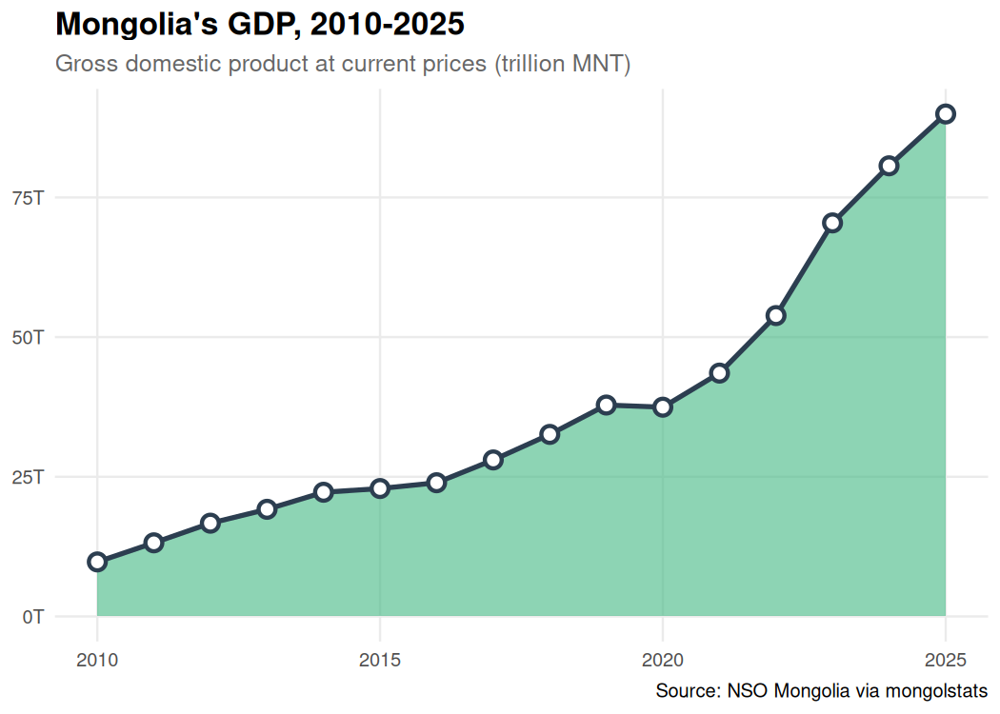
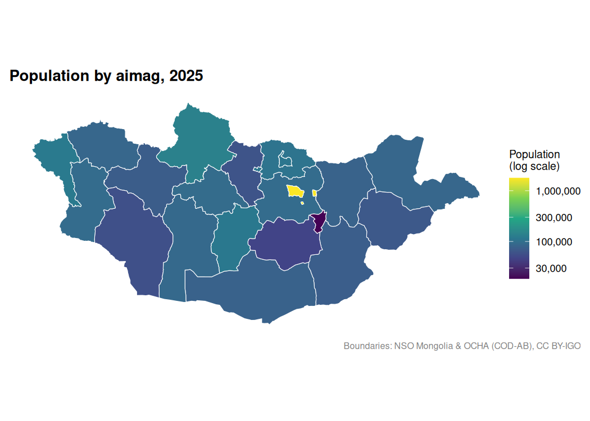

mongolstats is your gateway to the National Statistics Office of Mongolia (NSO). Access official data, analyze economic trends, and map regional statistics—all from within R.
Why mongolstats?
-
Instant Access: Query thousands of official datasets directly from
- Tidy Data: Analysis-ready tibbles with English or Mongolian labels.
-
Stable Periods: Years and months come back as labels such as
"2024"or"2024-03", and can be selected in any NSO period format. - Resilient: Tables that NSO moves within its catalogue are found automatically, and large requests are split to stay within the server’s limits.
- Mapping Ready: Results join by NSO code to the maps in the companion package mongolmaps.
Installation
You can install mongolstats from CRAN with:
install.packages(c("mongolstats", "mongolmaps"))Or install the development version from GitHub with the released mongolmaps from CRAN:
Quick Start
1. The Economic Pulse: GDP Trends
Find a table, then fetch it with selections written as codes or labels:
library(mongolstats)
library(dplyr)
library(ggplot2)
nso_search("gross domestic product, by production approach") |>
select(tbl_id, tbl_eng_nm)
#> # A tibble: 7 × 2
#> tbl_id tbl_eng_nm
#> <chr> <chr>
#> 1 DT_NSO_0500_001V4 GROSS DOMESTIC PRODUCT, by production approach, by econom…
#> 2 DT_NSO_0500_001V6 GROSS DOMESTIC PRODUCT, by production approach, by econom…
#> 3 DT_NSO_0500_004V1 GROSS DOMESTIC PRODUCT, by production approach, by econom…
#> 4 DT_NSO_0500_022V1 GROSS DOMESTIC PRODUCT, by production approach, by econom…
#> 5 DT_NSO_0500_022V1-1 GROSS DOMESTIC PRODUCT, by production approach, by econom…
#> 6 DT_NSO_0500_001V1 GROSS DOMESTIC PRODUCT, by production approach, by econom…
#> 7 DT_NSO_0500_001V3 GROSS DOMESTIC PRODUCT, by production approach, by econom…
gdp <- nso_data(
tbl_id = "DT_NSO_0500_001V1",
selections = list(
"Statistical indicator" = "GDP, at current prices",
"Economic activity" = "Total",
Year = nso_period_seq("2010", "2025")
)
)
# Years come back as labels, newest first; "2025*" marks a preliminary figure
head(gdp, 3)
#> # A tibble: 3 × 4
#> `Statistical indicator` `Economic activity` Year value
#> <chr> <chr> <chr> <dbl>
#> 1 0 0 2025* 89937128.
#> 2 0 0 2024 80663051.
#> 3 0 0 2023 70441516.
gdp |>
ggplot(aes(x = nso_period_date(Year), y = value / 1e6)) +
geom_area(fill = "#42b883", alpha = 0.6) +
geom_line(color = "#2c3e50", linewidth = 1.2) +
geom_point(color = "#2c3e50", size = 3, shape = 21, fill = "white", stroke = 1.5) +
scale_y_continuous(labels = scales::label_number(suffix = "T")) +
labs(
title = "Mongolia's GDP, 2010-2025",
subtitle = "Gross domestic product at current prices (trillion MNT)",
x = NULL,
y = NULL,
caption = "Source: NSO Mongolia via mongolstats"
) +
theme_minimal(base_size = 12) +
theme(
plot.title = element_text(face = "bold", size = 16),
plot.subtitle = element_text(color = "grey40"),
panel.grid.minor = element_blank()
)
2. Mapping Regional Population
NSO tables identify places by code. mongolmaps boundaries carry the same codes, so mn_join() attaches a table to the map in one step, keeping the aimags and dropping the national and regional totals:
library(mongolmaps)
pop_tbl <- "DT_NSO_0300_002V1"
latest <- nso_latest_periods(pop_tbl)
pop <- nso_data(pop_tbl, selections = list(Year = latest))
pop |>
mn_join(by = "Region", level = "aimag") |>
mn_map(fill = value, trans = "log10", title = paste("Population by aimag,", latest)) +
labs(fill = "Population\n(log scale)")
Sources and metadata / Эх сурвалж ба мета өгөгдөл
The 0.4 workflow adds reviewed indicator queries, source citations, durable provenance manifests, and source-value status. Start with a concept, inspect its definition and unit, then keep the original status records alongside an export.
0.4 хувилбарт хянасан үзүүлэлтийн асуулга, эх сурвалжийн ишлэл, хадгалж болох бүртгэл, анхны утгын төлөв нэмэгдсэн. Үзүүлэлтийн тодорхойлолт, нэгжийг шалгаж, экспортын хамт анхны тэмдэглэгээний мэдээллийг хадгалаарай.
nso_indicators("GDP")
nso_indicator("gdp_current")
gdp <- nso_indicator_query("gdp_current", periods = c("2023", "2024")) |>
nso_fetch(labels = "both")
nso_table_info(gdp)
nso_citation(gdp)
nso_value_status(gdp)
nso_write_manifest(gdp, "gdp-provenance.json")
# Discover definitions and the separate public portal.
# Тодорхойлолт болон тусдаа нээлттэй порталаас хайх.
nso_metadata_search("хүн ам", type = "all")
nso_indicators(source = "portal")Portal identifiers and geography codes use their own source scheme; missing official labels remain missing. Datamart support provides discovery only. Open the bilingual source and metadata guide with vignette("data-provenance", package = "mongolstats") for exports, quality checks, classification codebooks, catalog freshness, and the limits of the experimental services.
Порталын дугаар, газар зүйн код нь өөрийн эх сурвалжийн тогтолцоотой. Албан ёсны нэр байхгүй бол дутуу хэвээр үлдэнэ. Өгөгдлийн сангийн дэмжлэг нь зөвхөн жагсаалт үзүүлнэ. Экспорт, чанарын шалгалт, ангиллын код, хайлтын шинэ байдал, туршилтын үйлчилгээний хязгаарыг хоёр хэл дээрх заавраас үзээрэй: vignette("data-provenance", package = "mongolstats").
Documentation
Full documentation is available at temuulene.github.io/mongolstats.
- Getting Started - Your first epidemiological analysis
- Discovery Guide - Find and explore tables
- Mapping Guide - Map NSO data with mongolmaps
Contributing
We welcome contributions! Please see the Contributing Guidelines for details.